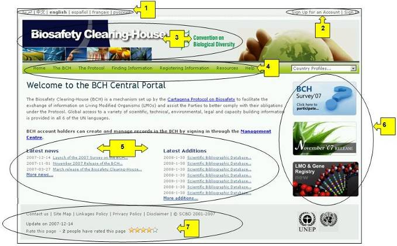

Ссылка: http://bch.cbd.int/
Начальная страница Центрального портала МПБ представляет собой Главную страницу, которая обеспечивает доступ ко всем компонентам МПБ и информации, хранящейся на Центральном портале, который, в свою очередь, связан со всеми международными, региональными и национальными узлами, предоставляющими информацию МПБ.
Начальная страница МПБ содержит следующие семь компонентов:
1) Ссылки на возможность выбора одного из шести языков Организации Объединенных Наций (ООН) для работы с Центральным порталом представлены в левом верхнем углу домашней страницы.
2) Ссылка Sign In (Войти) для зарегистрированных пользователей (для доступа к центру управления) и ссылка Sign up for an Account (Создать учетную запись) для новых пользователей, желающих зарегистрироваться на центральном портале МПБ, расположены в правом верхнем углу.
3) Под этими ссылками располагается заглавие со ссылками на начальную страницу Механизма посредничества по биобезопасности и на веб-сайт Конвенции о биологическом разнообразии.
4) Навигационная панель располагается по всей длине начальной страницы под заглавием. Она содержит ссылки на основные разделы Центрального портала МПБ
5) Ниже навигационной панели располагается основная зона, включающая текущие новости и последние дополнения;
6) Справа от основной зоны располагаются панель быстрого перехода к популярным или недавно добавленным разделам.
7) Под основной зоной находятся: ссылка для связи с Секретариатом КБР, ссылка на схему сайта, а также ссылки на правила использования ссылок, правила конфиденциальности, заявление об авторских правах. Под этими ссылками находится дата последнего обновления начальной страницы и ссылка, позволяющая пользователям оценить данную страницу.

Рисунок 1